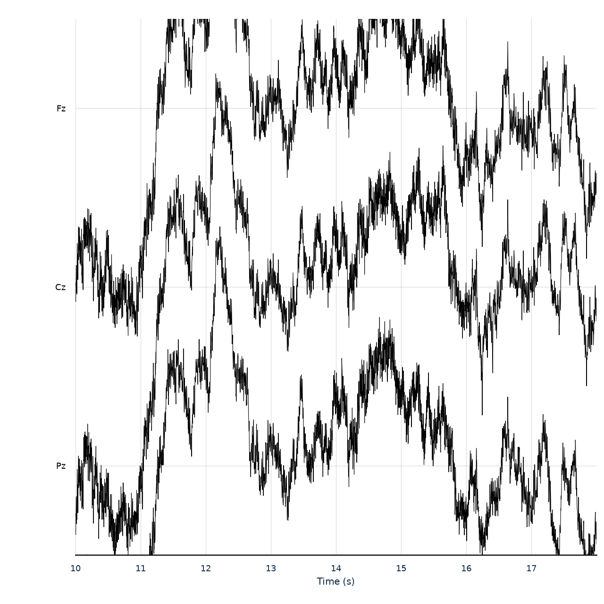
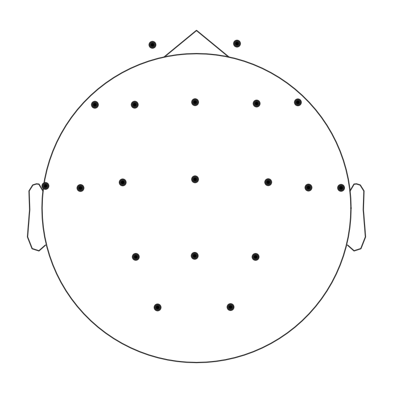
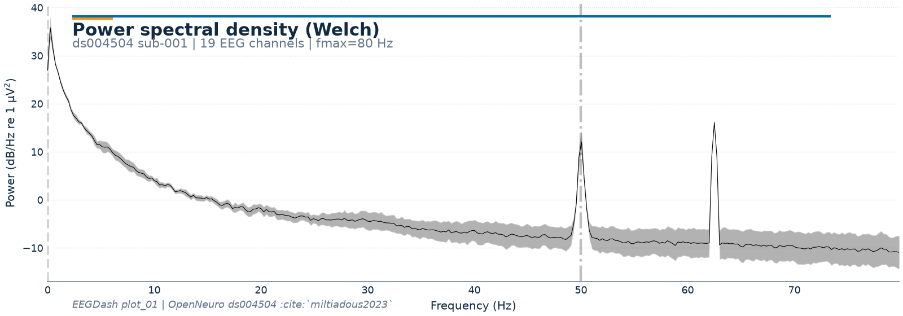

Note
Go to the end to download the full example code or to run this example in your browser via Binder.
Load one EEG recording#
Difficulty 1 | Runtime: 2m | Compute: CPU
Once a search returns a candidate dataset (see plot_00), the next question is
practical: what does one recording actually contain? This tutorial loads a
single BIDS file from OpenNeuro ds004504
(Miltiadous et al. 2023; Alzheimer / frontotemporal dementia / healthy
controls) through the catalogue shared with NEMAR
[Delorme et al., 2022], unwraps the mne.io.Raw object, and inspects
channels, montage, and spectrum. The dataset is small (88 subjects, ~10 min
per subject, 19 channels at 500 Hz on a standard 10-20 layout) so the first
fetch is under 25 MB and every later step is a hot-cache read.
Keywords: loading, BIDS
Learning objectives#
Build an
EEGDashDatasetand read its HTML repr.Pick one record by indexing into
dataset.datasets.Read sampling rate, channel count, and duration from the underlying
mne.io.Raw.Look at the signal (
raw.plot), the montage (raw.plot_sensors), and the spectrum (raw.compute_psd().plot).
Requirements#
About 2 min on CPU on first run; under 10 s once cached.
Network: ~80 MB on the first call (downloaded once into the cache).
Cache directory:
EEGDASH_CACHE_DIRenv var, defaults to~/.eegdash_cache.Prerequisite:
plot_00_first_search.
Setup. No randomness here, so no seed.
import os
from pathlib import Path
import matplotlib.pyplot as plt
import mne
import numpy as np
import pandas as pd
import eegdash
from eegdash import EEGDashDataset
from eegdash.viz import style_figure, use_eegdash_style
# Force MNE's matplotlib browser so raw.plot returns a Figure (the Qt
# browser returns an MNEQtBrowser instance and skips static capture).
mne.viz.set_browser_backend("matplotlib")
use_eegdash_style()
cache_dir = os.environ.get("EEGDASH_CACHE_DIR", str(Path.home() / ".eegdash_cache"))
print(f"eegdash {eegdash.__version__}; cache_dir={cache_dir}")
Using matplotlib as 2D backend.
eegdash 0.8.2; cache_dir=/home/runner/eegdash_cache
Concepts behind EEGDashDataset#
A few ideas that the rest of the tutorial assumes:
Metadata index vs. file blobs. EEGDash separates records (small JSON documents in MongoDB) from files (BIDS payloads on OpenNeuro / S3). A query touches only the index; the bytes wait.
Lazy by default.
EEGDashDataset(...)returns immediately; no signal moves over the network. Each per-record entry exposesrawas a property, so the download and open happen the first time you read it (and only that record). The constructor acceptsdownload=Falseto enforce strict offline mode against an already populated cache; otherwise EEGDash fetches missing files intocache_diron demand.download_all()lets you front-load explicitly when a pipeline cannot afford a cold cache.Inherits from Braindecode.
EEGDashDatasetis abraindecode.datasets.BaseConcatDataset; each entry underdatasetsis abraindecode.datasets.BaseDatasetsubclass. Any code that accepts those types (create_fixed_length_windows(ds, ...),DataLoader(ds, ...),Preprocessor(...)pipelines) accepts an EEGDashDataset without changes.Pull and push from a Hub.
push_to_hub()/pull_from_hubround-trip a derived dataset (preprocessed signals, windows, or a feature table) to a HuggingFace Hub repo. The metadata index stays the source of truth for raw recordings; the Hub is for the versioned, ML-ready artefacts you build on top of them.BIDS entities are the query language.
dataset,subject,task,session,runflow through to the index unchanged [Pernet et al., 2019].
Step 1: Build the dataset (lazy)#
Constructing an EEGDashDataset only queries the
metadata catalogue. No EEG bytes move yet.
Predict. How many records will the query for ds004504 subject
001 return: 1 eyes-closed file, several tasks, or the whole
dataset?
Run. Build the object; the HTML repr below shows what matched.
Step 2: Summarize without touching the network#
Every matched record exposes its BIDS metadata on
description, a
pandas.DataFrame materialised without any network call. Useful
for sanity-checking a query before paying any download cost.
description = dataset.description
first_record = dataset.records[0] if getattr(dataset, "records", None) else {}
def _nunique(col: str) -> int:
return description[col].nunique() if col in description.columns else 0
pd.Series(
{
"n_records": len(dataset),
"n_subjects": _nunique("subject"),
"n_tasks": _nunique("task"),
"n_sessions": _nunique("session"),
"channels": int(first_record.get("nchans", 0)),
"sampling_frequency_hz": float(first_record.get("sampling_frequency", 0.0)),
},
name="value",
).to_frame()
Step 3: Pick one record#
EEGDashDataset wraps a list of per-recording
entries on datasets. Each entry is
an EEGDashBaseDataset (a Braindecode BaseDataset
subclass) carrying a BIDS path, a description, and the lazy raw
property. Indexing into that list is the standard Python idiom for
grabbing one; record.raw is what triggers the download and opens
the file with MNE-Python [Gramfort et al., 2013].
record = dataset.datasets[0]
raw = record.raw
Step 4: BIDS metadata as a DataFrame#
Every recording carries the same BIDS envelope [Pernet et al., 2019].
record.description already is a pandas.Series; keeping the
fields we care about and adding the duration gives a readable view.
keep = [
"dataset",
"subject",
"task",
"session",
"run",
"sampling_frequency",
"nchans",
"ntimes",
"datatype",
]
meta_view = record.description.reindex(keep).to_frame("value")
meta_view.loc["duration (s)"] = round(raw.times[-1] - raw.times[0], 1)
meta_view.loc["annotations"] = len(raw.annotations)
meta_view
Step 5: Inspect the MNE Raw object#
MNE-Python ships its own HTML repr for Raw: a small table
with sampling rate, projections, bad channels, and channel types.
Investigate. Read the rate, the channel-type breakdown, and check the “bad channels” row: empty here (no bad channels marked yet).
raw
Step 6: Plot the signal#
Run. mne.io.Raw.plot() renders an 8 s window across a small
midline + temporal selection, the most readable view at this scale.
Explicit scalings and a longer duration make the morphology
legible; default settings squeeze too many channels into the same
strip and flatten the signal.
midline_picks = [
ch
for ch in ("Fz", "Cz", "Pz", "Oz", "FCz", "CPz", "POz", "T7", "T8")
if ch in raw.ch_names
][:8]
fig_raw = raw.plot(
start=10.0,
duration=8.0,
picks=midline_picks if midline_picks else None,
n_channels=8,
scalings={"eeg": 50e-6},
show=False,
show_scrollbars=False,
show_scalebars=False,
title="",
)

Step 7: Sensor topology#
Where the electrodes sit on the scalp matters for every later analysis.
mne.io.Raw.plot_sensors() draws the montage as a 2-D head
schematic. With 74 channels, channel-name overlays clutter the view;
we drop them and let the spatial pattern speak.
ds004504 uses the standard 10-20 layout (Fp1, Fp2, F3, F4, … Cz, Pz,
19 electrodes); standard_1020 covers all of them. plot_sensors
is rendered only when positions actually got attached, so the cell
stays robust against arbitrary channel-naming.
raw.set_montage(
"standard_1020",
match_case=False,
match_alias=True,
on_missing="ignore",
)
has_positions = any(not np.allclose(ch["loc"][:3], 0.0) for ch in raw.info["chs"])
fig_sens, ax_sens = plt.subplots(figsize=(5.0, 5.0))
if has_positions:
raw.plot_sensors(
kind="topomap",
show_names=False,
axes=ax_sens,
show=False,
)
ax_sens.set_title("")
else:
ax_sens.text(
0.5,
0.5,
"Sensor positions unavailable in this build's montage",
ha="center",
va="center",
)
ax_sens.set_axis_off()
fig_sens.tight_layout()

Step 8: Power spectral density#
A PSD is the cleanest first look at signal quality: line noise spikes at 50 or 60 Hz, slow drifts below 1 Hz, broadband 1/f. We compute Welch’s PSD on EEG channels only and plot in dB.
psd = raw.copy().pick("eeg").compute_psd(fmax=80.0, verbose=False)
fig_psd = psd.plot(picks="eeg", average=True, show=False)
style_figure(
fig_psd,
title="Power spectral density (Welch)",
subtitle=f"{DATASET} sub-{SUBJECT} | {len(raw.copy().pick('eeg').ch_names)} EEG channels | fmax=80 Hz",
source=f"EEGDash plot_01 | OpenNeuro {DATASET} :cite:`miltiadous2023`",
)
plt.show()

Plotting power spectral density (dB=True).
/home/runner/work/EEGDash/EEGDash/eegdash/viz/identity.py:178: UserWarning: This figure was using a layout engine that is incompatible with subplots_adjust and/or tight_layout; not calling subplots_adjust.
fig.subplots_adjust(top=0.84, bottom=0.18, left=0.12, right=0.95)
A common mistake, and how to recover#
Run. Indexing past the end of dataset.datasets raises
IndexError, the standard Python contract. We trigger it on
purpose so the failure mode is visible [Nederbragt et al., 2020].
try:
_ = dataset.datasets[999]
except IndexError as exc:
print(f"Caught IndexError: {exc}")
safe_idx = min(999, len(dataset.datasets) - 1)
print(f"Recovery: dataset.datasets[{safe_idx}] instead.")
Caught IndexError: list index out of range
Recovery: dataset.datasets[0] instead.
Modify#
Your turn. Change SUBJECT to a different one and re-run Step 3.
The acquisition protocol is shared, so sampling rate and channel count
match; small differences in run length per subject are normal.
SECOND_SUBJECT = "002"
raw_b = (
EEGDashDataset(cache_dir=cache_dir, dataset=DATASET, subject=SECOND_SUBJECT)
.datasets[0]
.raw
)
pd.DataFrame(
{
f"sub-{SUBJECT}": [
raw.info["sfreq"],
raw.info["nchan"],
round(raw.times[-1], 1),
],
f"sub-{SECOND_SUBJECT}": [
raw_b.info["sfreq"],
raw_b.info["nchan"],
round(raw_b.times[-1], 1),
],
},
index=["sfreq (Hz)", "nchan", "duration (s)"],
)
Downloading sub-002_task-eyesclosed_channels.tsv: 0%| | 0.00/284 [00:00<?, ?B/s]
Downloading sub-002_task-eyesclosed_channels.tsv: 100%|██████████| 284/284 [00:00<00:00, 1.09MB/s]
Downloading sub-002_task-eyesclosed_eeg.json: 0%| | 0.00/868 [00:00<?, ?B/s]
Downloading sub-002_task-eyesclosed_eeg.json: 100%|██████████| 868/868 [00:00<00:00, 3.49MB/s]
[06/05/26 15:14:53] WARNING File not found on S3, skipping: downloader.py:163
s3://openneuro.org/ds004504/sub-0
02/eeg/sub-002_task-eyesclosed_ee
g.fdt
Downloading sub-002_task-eyesclosed_eeg.set: 0%| | 0.00/30.3M [00:00<?, ?B/s]
Downloading sub-002_task-eyesclosed_eeg.set: 56%|█████▌ | 16.9M/30.3M [00:00<00:00, 76.0MB/s]
Downloading sub-002_task-eyesclosed_eeg.set: 100%|██████████| 30.3M/30.3M [00:00<00:00, 117MB/s]
Make#
Mini-project. Pick a different OpenNeuro dataset (start with
ds002893 for a 32-channel auditory study) and repeat Steps 1, 3, and
5. Compare the montage and the PSD shape.
Wrap-up#
We loaded one recording end-to-end without writing a download script:
EEGDashDataset resolved the BIDS query against the
NEMAR / OpenNeuro catalogue, dataset.datasets[0].raw materialised
the file lazily, and MNE-Python carried the rest. The signal is
unprocessed; line noise and drifts are still in the view. Preprocessing
belongs in plot_10_preprocess_and_window. Next:
plot_02_dataset_to_dataloader wraps these recordings in a PyTorch
DataLoader.
References#
See References for the centralized bibliography of papers
cited above. Add or amend an entry once in
docs/source/refs.bib; every tutorial inherits the update.
Total running time of the script: (0 minutes 3.598 seconds)